정보처리기능사 (2001-07-22 기출문제)
1과목: 전자 계산기 일반
1. 다음 게이트에서 입력 A, B에 대한 출력 Y의 논리식은?
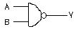
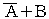
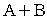
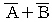
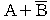
(정답률: 87%)

2. 컴퓨터 시스템에서 명령어를 실행하기 위하여 CPU에서 이루어지는 동작 단계의 하나로써, 기억장치로부터 명령어를 읽어 들이는 단계는?
- 재기록(write back)단계
- 실행(execute)단계
- 해독(decoding)단계
- 펫치(fetch)단계
(정답률: 58%)
3. 10진수 14.625를 2진수로 표현한 값은?
- 1111.011
- 1110.110
- 1110.011
- 1110.101
(정답률: 63%)
4. 원판형의 자기디스크 장치에서 하나의 원으로 구성된 기억공간으로, 원판형을 따라 동심원으로 나눈 것은?
- 트랙(Track)
- 릴(Reel)
- 헤드(Head)
- 실린더(Cylinder)
(정답률: 84%)
5. 다음 보기 중 입력, 출력 모두 가능한 장치로만 이루어진 항은?
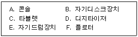
- B,C,E
- C,D,F
- B,E
- A,B,E
(정답률: 59%)
6. 컴퓨터의 연산장치에서 수행하는 논리 연산과 무관한 항은?
- ADD
- AND
- NOT
- OR
(정답률: 82%)
7. 다음 중 언어 번역 프로그램(Language Translator)이 아닌 것은?
- 어셈블러
- 인터프리터
- 로더
- 컴파일러
(정답률: 77%)
8. 그림과 같은 회로도에서 A=1, B=1, C=0 일 때 X로 출력되는 값은?
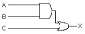
- 1
- 2
- 0
- 3
(정답률: 85%)
9. 가상기억장치 시스템에서 주소 공간의 가상주소에서 기억장치 공간의 물리주소로의 변환은 어떤 작업에 의하여 이루어지는가?
- shading 작업
- buffering 작업
- swiching 작업
- mapping 작업
(정답률: 54%)
10. 아래 그림의 결과값은?
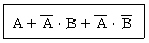
- 0
- 1
- 2
- 3
(정답률: 77%)
11. 2진수 (10110)2 의 2의 보수는?
- 01100
- 01011
- 01010
- 01001
(정답률: 60%)
12. 기억 장소의 위치 지정 또는 특정한 입·출력 포트를 지칭하기 위해 사용되는 것은?
- field
- record
- block
- address
(정답률: 69%)
13. 인스트럭션 형식 중 모든 데이터 처리가 누산기에 의해 이루어 지며, 연산 결과는 누산기에 저장되는 형식은?
- 1-주소 인스트럭션 형식
- 3-주소 인스트럭션 형식
- 0-주소 인스트럭션 형식
- 2-주소 인스트럭션 형식
(정답률: 62%)
14. 컴퓨터 시스템에서 예기치 못한 일이 일어났을 때, 그것을 제어프로그램에 알려 CPU가 하던 일을 멈추고 다른 작업을 처리하도록 하는 방법을 무엇이라 하는가?
- 로테이트(rotate)
- 인터럽트(interrupt)
- 교착상태(deadlock)
- 모듈(module)
(정답률: 70%)
15. 8비트로 256문자를 나타내는 체계의 정보 코드는?
- EBCDIC 코드
- BCD 코드
- Gray 코드
- ASCII 코드
(정답률: 68%)
16. 제어장치에서 명령어 실행 싸이클에 해당하지 않는 것은?
- 간접 주기(indirect cycle)
- 직접 주기(direct cycle)
- 실행 주기(execute cycle)
- 인출 주기(fetch cycle)
(정답률: 51%)
17. 기억장치에 저장된 여러 개의 프로세스가 수행 상태, 대기 상태, 준비 상태와 같은 변환 과정을 반복할 때, 각 프로세스에게 중앙처리장치의 사용 시간을 할당하는 것을 무엇이라 하는가?
- partition
- scheduling
- fragmentation
- optimize
(정답률: 65%)
18. 논리 게이트의 조합으로 구성되어 출력이 입력값에 의해 결정되는 조합논리 회로가 아닌 것은?
- 멀티플렉서(Multiplexer)
- 전가산기(Full-Adder)
- 디코더(Decoder)
- 플립플롭(Flip-Flop)
(정답률: 52%)
19. 인터넷에서 사용되는 도메인(domain)명의 연결이 바르게 된 것은?
- ac : 교육기관
- net : 군사기관
- nm : 연구기관
- co : 정부기관
(정답률: 63%)
20. 정보처리 속도 단위 중 초당 1,000개의 연산을 수행한다는 의미의 단위는?
- MFLOPS
- MIPS
- KIPS
- LIPS
(정답률: 58%)
2과목: 패키지 활용
21. 스프레드시트의 기능이라고 볼 수 없는 것은?
- 차트 기능
- 슬라이드 작성 기능
- 표 계산 기능
- 데이터베이스 기능
(정답률: 79%)
22. 데이터베이스 디자인 단계의 순서가 옳은 것은?
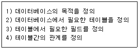
- (1)-(2)-(4)-(3)
- (1)-(4)-(2)-(3)
- (1)-(3)-(2)-(4)
- (1)-(2)-(3)-(4)
(정답률: 78%)
23. 사용자와 데이터베이스간의 대화형 처리를 가능하게 해주는 기능을 가지고 있으며, 사용자가 가장 편안하고 자유롭게 화면 구성배치를 하여 손쉽게 데이터를 입력하거나 질의에 대한 대화작업 등을 편리하게 제공할 수 있는 것은?
- 보고서(Report)
- 테이블(Table)
- 폼(Form)
- 질의(Query)
(정답률: 52%)
24. 엑셀 문서 파일의 저장시 기본적으로 붙는 확장자는?
- WP
- XLS
- DOC
- HWP
(정답률: 77%)
25. 프레젠테이션 프로그램을 사용하는 용도 중 가장 거리가 먼 것은?
- 회사의 제품 선전
- 신제품 설명회
- 문서작성
- 강연회 준비
(정답률: 86%)
26. DBMS의 장점이 아닌 것은?
- 데이터 공유
- 데이터 무결성 유지
- 데이터 중복성 최대화
- 데이터 보안성 보장
(정답률: 87%)
27. 스프레드시트에서 기본 입력 단위를 무엇이라고 하는가?
- 툴 바
- 셀
- 탭
- 블록
(정답률: 90%)
28. 엑셀 시트에서 연속되지 않은 셀을 선택하기 위해 사용하는 방법은?
- "Ctrl" 키를 누른 채, 지정할 셀을 클릭 또는 드래그한다.
- "Space" 키를 누른 채, 지정할 셀을 클릭 또는 드래그한다.
- "Alt" 키를 누른 채, 지정할 셀을 클릭 또는 드래그한다.
- "Shift" 키를 누른 채, 지정할 셀을 클릭 또는 드래그한다
(정답률: 81%)
29. 프레젠테이션을 구성하는 내용을 하나의 화면 단위로 나타낸 것을 의미하는 것은?
- 슬라이드
- 개체
- 포인트
- 서식파일
(정답률: 88%)
30. 파워포인트에서 한 개의 도형이 선택된 상태에서 다른 도형을 연속적으로 선택하려면 어느 키를 누르고 선택해야 하는가?
- Caps Lock
- Shfit
- Ctrl
- Alt
(정답률: 70%)
3과목: PC 운영 체제
31. UNIX에서 파일의 I-NODE에 포함된 내용이 아닌 것은?
- 파일이 가장 최근에 사용된 시간
- 파일 소유자의 사용자 번호
- 데이터가 담겨진 레코드의 주소
- 파일의 크기와 만든 시간
(정답률: 50%)
32. 동영상을 볼 수 있는 비디오 파일 형식으로 짝지어 진 것은?
- avi, asf
- pcx, mpeg
- bmp, doc
- pcx, gif
(정답률: 66%)
33. "윈도 98"의 기능에 대한 설명으로 옳지 않은 것은?
- 가상 메모리 설정을 변경할 수 있다.
- 워드패드에서는 글꼴의 선택이 가능하다.
- 메모장은 간단한 텍스트 문서를 작성하는데 사용된다.
- 계산기에서 로그(log) 계산은 불가능하다.
(정답률: 67%)
34. "윈도 98"의 탐색기에서 파일이나 폴더를 같은 드라이브로 이동하는 방법 및 선택 방법으로 옳지 않은 것은?
- 이동할 파일이나 폴더의 전체항목을 선택하는 단축키는 <Ctrl>+<A>이다.
- 마우스의 오른쪽 단추를 누른 후 드래그앤드롭을 이용하여 이동한다.
- 비연속인 여러 개의 파일이나 폴더를 선택 할 경우<Shift> 단축키를 사용한다.
- 마우스의 왼쪽 단추로 드래그앤드롭을 이용하여 이동한다.
(정답률: 69%)
35. 스풀링과 버퍼링에 대한 설명 중 옳지 않은 것은?
- 버퍼링은 송신자와 수신자의 속도차이를 해결하기 위하여 사용한다.
- 버퍼링은 서로 다른 여러 작업에 대한 입·출력과 계산을 동시에 수행한다.
- 스풀링은 저속의 입·출력장치와 고속의 CPU간의 속도차이를 해소하기 위한 방법이다.
- 버퍼링은 주기억장치의 일부를 버퍼로 사용한다.
(정답률: 63%)
36. 도스(MS-DOS)에서 화면에 나타나는 내용을 화면 출력과 동시에 프린터로 출력하고자 할 때 사용하는 키는?
- Shift + PrtScr
- Ctrl + PrtScr
- PrtScr
- Alt + PrtScr
(정답률: 48%)
37. 운영체제의 성능 평가 항목으로 가장 거리가 먼 것은?
- 신뢰도
- 처리능력
- 비용
- 사용가능도
(정답률: 84%)
38. 도스의 시스템 파일 중 MSDOS.SYS에 대한 설명으로 옳지 않은 것은?
- 숨겨진 파일로 존재하여 보이지 않는다.
- 파일, 메모리, 프로세서 등을 관리한다.
- 실제 입·출력 기능을 담당한다.
- 시스템 호출을 담당한다.
(정답률: 48%)
39. UNIX에서 기억장치 관리 기법이 아닌 것은?
- 주소매핑(address mapping)
- 필터링(filtering)
- 스와핑(swapping)
- 페이징(paging)
(정답률: 46%)
40. "윈도 98"의 휴지통에 대한 설명으로 옳지 않은 것은?
- 휴지통 비우기를 실행하면 더 이상 복구가 불가능해진다.
- 삭제된 파일이 저장되는 공간이다.
- 각 드라이브마다 별도로 설정할 수 있다.
- 휴지통에 있는 파일을 직접 실행시키려면 해당 파일을 더블클릭한다.
(정답률: 73%)
41. "윈도 98"의 특징으로 옳지 않은 것은?
- 여러 개의 작업을 동시에 처리할 수 없다.
- PnP(Plug and Play)기능을 제공한다.
- 인터넷 익스플로러가 내장되어 있다.
- 쉽게 인터넷에 접근할 수 있는 기능을 제공한다.
(정답률: 67%)
42. 다중처리시스템에서 하나의 프로세서가 CPU를 독점하는 것을 방지하기 위하여 각각 하나의 시간슬롯을 할당하여 동작하도록 하는 시스템은?
- 병렬처리 시스템
- 시분할처리 시스템
- 실시간처리 시스템
- 분산처리 시스템
(정답률: 76%)
43. 도스(MS-DOS)에서 하드디스크를 논리적으로 여러 개의 디스크로 나누어 각 볼륨이 서로 다른 드라이브 문자를 가진 별개의 드라이브로 동작하도록 하는데 사용되는 명령어는?
- CHKDSK
- VOL
- XCOPY
- FDISK
(정답률: 68%)
44. 다음 <보기>는 "윈도 98"의 어떤 기능을 설명하는가?
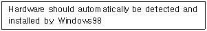
- DMA(Direct Memory Access)
- OLE(Object Linking and Embedding)
- Drag and Drop
- PnP(Plug and Play)
(정답률: 69%)
45. Which of the following key strokes is able to copy it to the clipboard in WINDOWS 98?
- Ctrl + c
- Ctrl + x
- Ctrl + v
- Alt + c
(정답률: 80%)
46. 교착상태의 발생 조건에 해당하지 않는 것은?
- 순환대기
- 점유와 대기
- 상호배제
- 선점
(정답률: 66%)
47. 도스(MS-DOS)에서 필터(filter) 명령어에 해당하지 않는 것은?
- SORT
- MORE
- MEM
- FIND
(정답률: 57%)
48. 도스(MS-DOS)의 부팅(Booting)에 관한 설명으로 옳지 않은 것은?
- Warm Booting이란 Ctrl + Alt + Del 을 이용하는 것이다.
- 도스 프로그램을 컴퓨터의 보조기억장치에 적재하여 컴퓨터의 역할을 수행하게 하는 것이다.
- Cold Booting이란 전원을 이용하는 것이다.
- 부팅절차는 IO. SYS → MSDOS.SYS → CONFIG.SYS → COMMAND. COM → AUTOEXEC.BAT이다.
(정답률: 56%)
49. "윈도 98"에서 지정된 메뉴를 빠르게 실행하기 위한 단축키의 기능으로 옳지 않은 것은?
- <Alt>+<F4> : 열려진 창을 닫는다.
- <Ctrl>+<Esc> : 창 조절 메뉴를 표시한다.
- <Alt>+<Tab> : 실행되고 있는 응용프로그램을 선택하여 작업 전환할 수 있도록 표시 해준다.
- <Alt>+<Esc> : 실행되고 있는 응용프로그램으로 작업을 전환한다.
(정답률: 63%)
50. 다음 중 운영체제에 해당하지 않은 것은?
- UNIX
- LINUX
- PL/1
- Windows Me
(정답률: 70%)
4과목: 정보 통신 일반
51. 그림과 같은 네트워크는 데이터 처리관점에서 볼 때 어디에 속하는가?
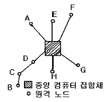
- 분산형
- 루프형
- 계층형
- 중앙집중형
(정답률: 66%)
52. 데이터통신의 정의에 대한 설명에 적합하지 않은 것은?
- 정보기기 사이에 디지털 2진 형태로 표현된 정보를 송·수신 하는 통신
- 통신신호가 아날로그(Analog) 형태인 음성전용 통신
- 전기통신회선에 전자계산기 본체와 그에 부수되는 입·출력 장치를 이용하는 통신
- 데이터전송과 데이터처리를 유기적으로 결합하도록 시스템을 구성하여 정보 전달의 목적을 달성하기 위한 통신
(정답률: 52%)
53. 광섬유 통신케이블에 사용되는 심선(코아)의 주재료는?
- PVC
- 동(Cu)
- 은(Ag)
- 석영유리(SiO2)
(정답률: 55%)
54. WWW 서비스를 이용하여 원하는 정보를 얻고자 할 때 WWW서버에 접속하여 HTML 문서를 받을 수 있는 클라이언트용 도구를 가지고 있어야 한다. 이를 무엇이라고 하는가?
- Domain
- http
- Browser
- IPv6
(정답률: 46%)
55. PCM 통신방식의 특징에 속하지 않는 것은?
- 레벨 변동에 대한 방해가 적다.
- 협대역 주파수가 점유된다.
- 잡은 누화에 대한 방해가 적다.
- 펄스코드를 이용한 변조방식이다.
(정답률: 43%)
56. EIA RS-232C DTE 접속장치의 판은 모두 몇 개인가?
- 25
- 16
- 8
- 32
(정답률: 61%)
57. VDT(Visual Display Terminal) 증후군 발생 원인이라고 볼 수 없는 것은?
- 컴퓨터 및 주변기기의 바이러스 오염
- 체형에 맞지 않은 책걸상 이용과 나쁜 자세
- 전자파를 많이 방출하는 장비 사용
- 좁은 공간과 열악한 사무환경
(정답률: 53%)
58. 통신사업자에게 회선을 임차하여 네트워크를 구축하고 부가가치가 높은 서비스를 제공하는 통신망은?
- ISDN
- LAN
- CATV
- VAN
(정답률: 46%)
59. 송신측에서 한 개의 블록을 전송한 다음 수신측이 에러의 발생을 점검한 후 'ACK'나 'NAK'를 보내올 때까지 기다리는 방식은?
- 연속적 ARQ
- cycle code
- 수직 parity check
- stop and wait ARQ
(정답률: 58%)
60. OSI 참조모델의 최하위 계층은?
- 물리층
- 전송층
- 세션층
- 표현층
(정답률: 69%)